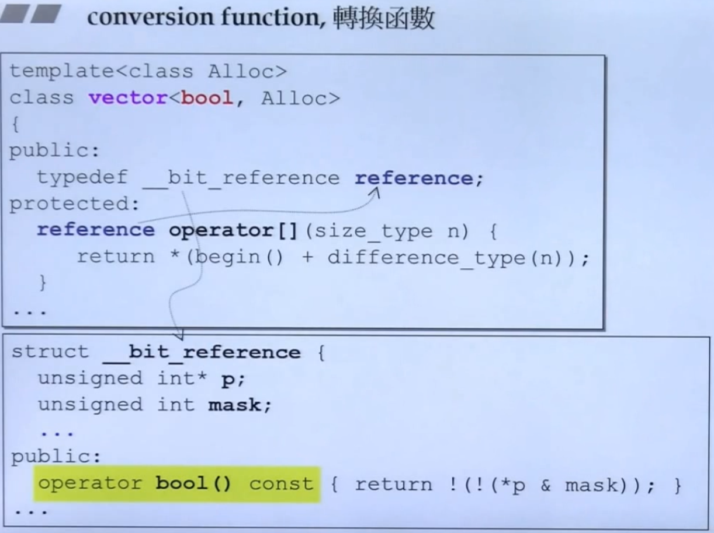
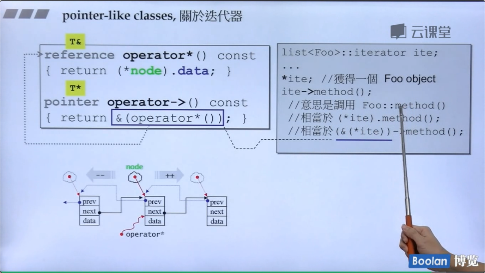
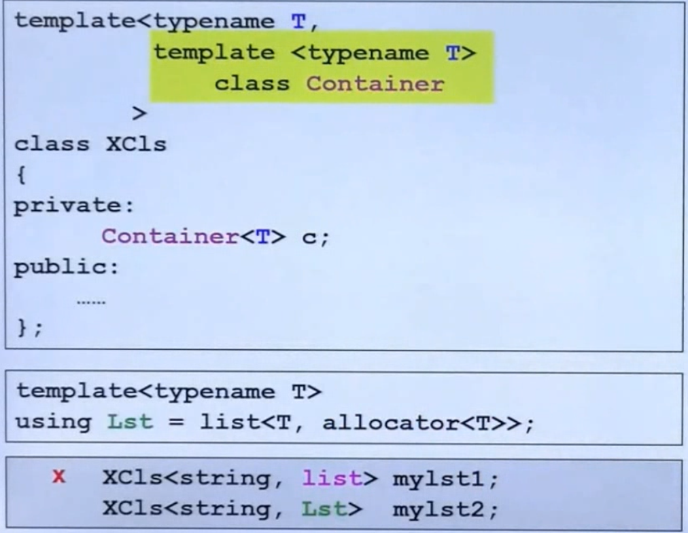

conversion function 转换函数
class Fraction{
public:
Fraction(int num,int den=1)
: m_mumerator(num),m_denominator(den) { }
operator double() const {
return (double) (m_numerator/,_denominator);
}
private:
int m_numerator;
int m_denominator;
}
operator double()注意： 1，不需要写返回类型（本来就是返回double，写了还可能写错） 2，加const（一定不会改数据，也不需要参数）
有了这个转换函数 就可以让 double和fraction 相加了。
Fraction f(4);
double ans=f+4;
编译器发现。f可转double，于是转了相加。
non-explicit one argument constructor
class Fraction{
public:
Fraction(int num,int den=1)
: m_mumerator(num),m_denominator(den) { }
Fraction operator+(const Fraction & f) {
return Fraction(...);
}
private:
int m_numerator;
int m_denominator;
}
Fraction f(3,5);
Fraction d = f+4;
由于没有转换函数。f+4里的f无法转换成double,而4会调构造函数（刚好只需要一个int参数就能构造），变成 Fraction类型。两个Fraction可以执行 + 操作。
但是，如果这时候再加上 上一节的 conversion 函数，
f+4 .f可以变成double；4可以变成Fraction 。两条路都能走。编译器就不知道怎么相加了。
这时候怎么让编译器明确选哪条路呢？
explicit
构造函数写成
explicit Fraction(int num,int den=1)
: m_mumerator(num),m_denominator(den) { }
这个关键字告诉编译器。不要私自用这个构造函数。只有我主动用才能构造。
标准库里用到的转换函数：

pointer-like classes
智能指针 看圆圈里的，
看圆圈里的，->这个符号比较特殊。 返回的结果会一直调用下去。所以 重载后的->解引用返回了 px后，自动又出现一个 ->往下指向method()
迭代器

这里不太懂。
function-like classes
重载了()的类。
标准库里有很多这种。干啥的呢？后面貌似会讲。
namespace
namespace jj01
{
void func(){ ... }
}
jjo1::func();
Template
<class T>里的class和typename用哪个都行
类模板使用的时候要指明类型。
函数模板不需要。 因为编译器可以做“实参推导”，根据你传进的参数，推出要调用什么类型。
模板函数都是半编译。最开始的时候编译能过，但是传入参数后，能不能编译不一定了。
EX：<T> bool isbigger(T a,T b){ return a>b} 模板这么写没问题。但是传进来两个石头。class石头如果重载了 > 就能编译过。不然就不行了。
member Template

在外层的T确定之后，里面的U也可以变化。
第9集。Mark。
specialization 特化
看下面的代码。如果Key传进来的是char\int\long 就会走这三段。 
偏特化
个数上的偏
泛化的T。如果可以为1个位的东西。特化一下，就可以省空间。
范围上的偏

就是泛化过的东西再泛化一次。这个东西就有两个泛化的版本。
注意区分这个和第一个完全的特化。
template template parameter 模板模板参数

13 STL
这节课只是科普。不用看了。
14 三个主题
variadic templates
void print(){//没有参数传进来时，结束
}
template<typename T,typename... Types>
void print(const T& firstArg,const Types&... args){
cout<<firstArg<<endl;//取出第一个参数，打印
print(args...);//递归地打印后面的一包参数
}
//用法：
print(7.5,"hello",bitset<16>(377),42);
//输出结果：
7.5
hello
00000000101111001
42
sizeof...(args)可以得到args里面有几个
auto
这个我常用。pass
ranged-base for
for(auto a:vt){cout<<a;}这种我常用，但是不能改里面的内容。于是有了这种写法：
for(auto& a:vt){a+=1;}取引用就OK了。
15 reference

其中的r是x的代表。所以sizeof(r)得到了8. 但其实这是一种假象！
[ ]
const是不是函数签名的一部分？函数签名就是说区分两个函数是否相同。
答案竟然是是。
查到了：这是由于c++制定的规则，当const和non-const版本同时存在，const object只会调用const版本，non-const object只会调用non-const版本。
16是之前讲过的复习 继承&复合关系下的构造和析构顺序
17 vptr和vtbl
vptr：虚指针 指向虚函数
vtbl: 虚table（里面存了
动态绑定三要素：
- 是指针
- 指向子类
- 调用虚函数
18 关于this
所有的成员函数都有隐藏参数this
19 动态绑定
17~19讲的是一个东西
19.2 const
讲了刚刚我不解搜到的这个知识点：当const和non-const版本同时存在，const object只会调用const版本，non-const object只会调用non-const版本。
non-const object可以调用const成员函数，反之则不行。
21 Operator new/delete 重载
new三个动作：1.执行operator new 分配内存 2. 3.执行ctor
delete 两个动作: 1.执行dtor 2.operator delete
重载operator new,new[],delete,delete[]，
//可重载全局的::operator new
inline void* operator new(size_t size){
return myAlloc(size);
}
inline void operator delete[](void* ptr){
myFree(ptr);
}
void* myAlloc(size_t size){ return malloc(size);}
void myFree(void* ptr){retun free(ptr);}
//或在class中
class Foo{
public:
void* operator new(size_t size);
void operator delete(void*,size_t);//size_t是可选参数
}
22 example
说delete的重载不会被执行，仅仅用于抛出异常（在new时调用ctor失败会抛出）。
而且不写也行。说明你不在乎异常。
24 example
举了标准库string里重载new的例子：什么时候要重载呢？当你想无声无息不知不觉地多分配一些空间的时候。